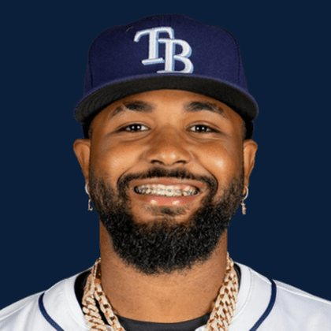
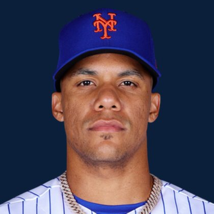
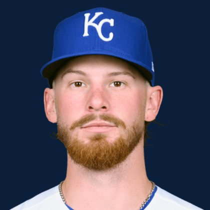
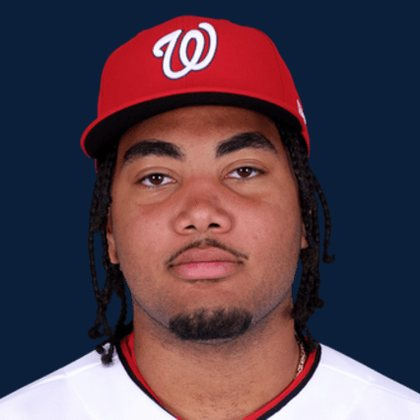
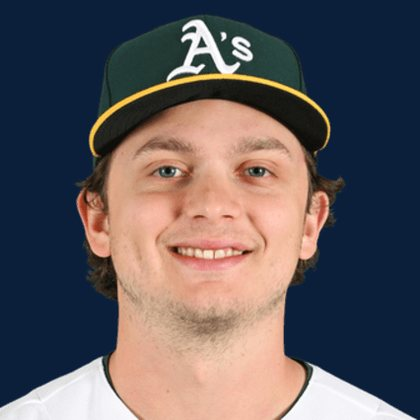
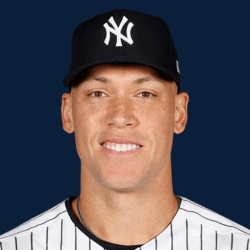

The Keep
Overall dynasty
Top 400 · 40 boards
Full board- 1

12,000 - 2
 10,873
10,873 - 3

10,228 - 4

9,769 - 5
 9,409
9,409 - 6

9,111 - 7
 8,855
8,855 - 8

8,629
BASE KEEP
The Keep · The Diamond · The Farm
Updated August 27, 2026 · Dynasty · Redraft
BASE KEEP
The Keep
Top 400 · 40 boards
Full board
12,000
10,228
9,769
9,111
8,629The Diamond
This year only
Full board
9,409More ranks
Hitters, pitchers, prospects, and the bullpen.
Tools
Price a deal or open a player file.
Tape
Memes and the wire.
Yamamoto and Sale are dealing this afternoon in Atlanta.
Brewers vs Padres Full Game Highlights Oct 04, 2026 | MLB Season YouTube
It’s a pivotal game 3 in the NLDS as the Braves return home to Atlanta.
Shohei Ohtani is batting fifth in the lineup against Braves ace Chris Sale in Game 3 of the NLDS.
The Dodgers and Braves head to Atlanta tied at one game apiece and the Padres face elimination at home.
Method
The other boards
Football, basketball, and the Premier League use the same rank-to-value idea. Baseball stays here.
FAQ
BaseKeep is baseball on Ball Keep. The Keep is dynasty overall top 400 from 40 boards. The Diamond is this-year redraft. The Farm is the top 100 prospects. Same BK Value curve as football.
Average of every source that ranked the player. Two of the boards run 500 names long.
BK News on this board clusters IL, roster, DFA, and manager tape hourly.